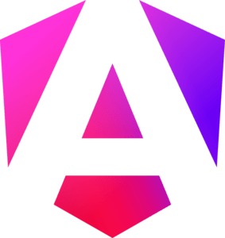
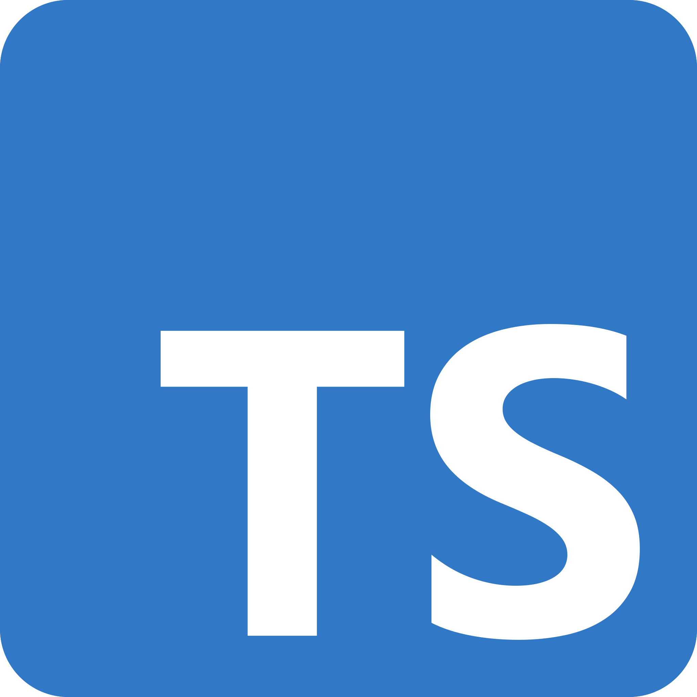
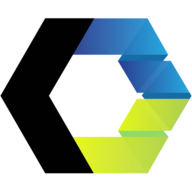
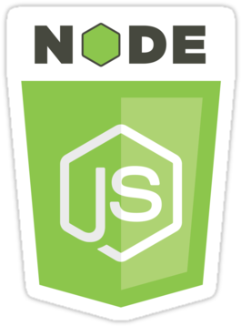
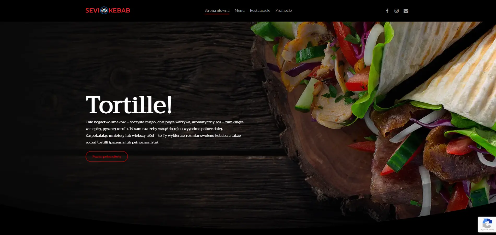
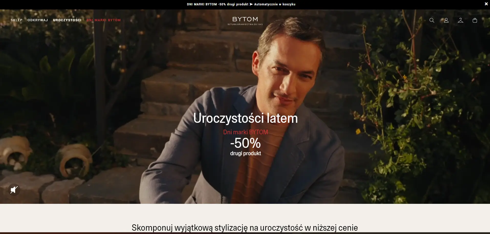

Hi! My name is Szymon and I have been dealing with frontend for 8 years.
I have spent most of my professional life using the Angular framework (since version 2), but I believe that it is not the knowledge of a specific tool that is most important, but the ability to quickly acquire new knowledge. That's why I didn't want to introduce myself as "Angular developer", "React developer" or "[insert any library name here] developer", but simply as "frontend developer" who can adapt to changing conditions.
In the past, I had the opportunity to work in both small teams and large corporations, which allowed me to gain experience in many different areas. At work, I value above all the opportunity for continuous development, which is why I always try to look for new challenges and opportunities to learn.
What I would like to bring to your team is, above all, a way of thinking that involves solving problems in the simplest and most effective way possible. I believe that you should choose the right tools for a specific problem, not the other way around. I don't like to complicate life, either for myself or for others, so I always try to choose solutions to accomplish the task set before me in the most optimal way.
I am a conflict-free, calm person and always ready to help. I value teamwork because I believe that it is teamwork that allows me to achieve the best results. I believe that each of us has something to offer, which is why I always try to listen to others and learn from them.
Outside of work, I am mainly interested in sports (especially tennis and football), and in my free time I also like to read a book or work in the garden.
specializations
Below you will find a list of technologies/topics in which I feel most confident. I didn't write here things like HTML, CSS or JavaScript, because in my opinion these are the basis of work as a frontend developer.

Angular
The framework in which I have the most experience (6 years) and in which I feel most comfortable. A great choice for large projects because Angular also provides us with a huge set of application management tools.
React
React and Next.js are technologies in which I have only been working for a year, but thanks to the fact that I already had a lot of experience with another framework, learning them was not a problem for me and I also feel very comfortable in them.

TypeScript
Due to the fact that I worked a lot with Angular, it was natural to learn more about TypeScript, which I consider a very important tool, especially on large team projects.

Web Components
Web Components can be a great solution for simple, non-framework-based projects where we want to use a component approach. Their great advantage is that they can be used seamlessly in any framework, so they can constitute a very good component library.
Accessibility
Accessibility was not the most important issue a few years ago (unfortunately), but currently it is one of the most important things that should be provided in every project. For me, this is definitely a priority task when creating an application.

Node.js
I specialize in frontend, but I have also worked with Node.js to create simple APIs. In the future, I would definitely like to expand my knowledge of Node.js and the general backend.
The above list is the main skills I have, but in addition to them I could also mention: RxJS, TailwindCSS, Jest, Git, GraphQL, HTMX, Bun, Elysia.js, Docker or English at B2 level.
experience
-
Akademia Górniczo-Hutnicza im. Stanisława Staszica w Krakowie, senior frontend developer
*I was working part-time most of the time because I was still finishing the project for Scalo.
goals and responsibilities
Our task (as a frontend team) was to design and release the MVP version of two projects intended for university purposes. We worked in SCRUM and the team itself consisted of many people - backend developers, testers, managers, etc.
achievements
The project implementation deadline was very short, but we were able to design such a flexible and scalable architecture that we managed to complete the task set before us.
tech stack
Next.js, Typescript, TailwindCSS
-
1000i, senior frontend developer
*It was primarily additional work after working hours
goals and responsibilities
A project on which I worked alone, which involved rewriting the previous version of the application into a new one in order to improve its SEO and performance. The first version was written using React, but I decided to use Next.js to provide Server Side Rendering and Static Site Generation.
achievements
The greatest success of this project was the Lighthouse test result of the production version, which was 98 and 100 points for the 'performance' and 'SEO' values. Additionally, I managed to complete the project in just over a month.
tech stack
Next.js, Typescript, strapi, Sass
-
Scalo, frontend developer
*When I started working at AGH, I started working part-time at Scalo.
goals and responsibilities
While working for Scalo, I was 'outsourced' to an external client from the financial industry, to the cybersecurity department. I was the only front-end developer in this project, and my task was to design and develop an internal application using Angular version 9+. The team consisted of 3 backend specialists and a project manager, and the whole project was carried out in SCRUM. In addition to the purely frontend layer, I was also responsible for the UX/UI part.
achievements
I worked on the project for 3 years and during that time it grew into a very large application, composed of several dozen modules, which could be very difficult to maintain if the architecture was poor. The fact that I was able to design it to avoid this is my greatest achievement.
tech stack
Angular 9+, Sass
-
MediaAmbassador, frontend developer
goals and responsibilities
A job that involved implementing many e-commerce projects. Most of them were created using Angular, but the older ones that had to be maintained were based on tools such as JQuery or AngularJS. We worked on several projects at once, in small teams with high project turnover.
achievements
The most important achievement was the development of a work model with the team that allowed us to serially implement projects in a short time, while maintaining high code quality. We were able to open one online store approximately every 1-2 months.
tech stack
Angular 2+, Sass
-
Appevo, junior frontend developer
goals and responsibilities
It was a kind of continuation of the work at Lithium. I had the opportunity to consolidate my knowledge and skills that I learned at my previous job.
achievements
I managed to create a kind of 'base setup' that made it easier for me to start each subsequent project and made my initial work much easier.
tech stack
HTML, CSS/Sass, JQuery, WordPress
-
Lithium, junior frontend developer
goals and responsibilities
My task was to program simple websites (in close cooperation with the designer) and then implement them on Wordpress. Apart from the substantive support of the senior developer, I worked on the development part independently.
achievements
Since I didn't have much experience in frontend, just completing projects without delays was a big achievement for me.
tech stack
HTML, CSS/Sass, JQuery, WordPress
education
-
Wroclaw University of Technology
Engineer - Electronics
Specialization: applications of computer engineering in technology
-
Public technical school No. 5 in Opole
IT specialist
portfolio
The gallery below shows just some of the projects carried out by companies where I had the pleasure of working. I decided to include only those in which my participation was large or very large. Unfortunately, most of them are projects from a few years ago, because the newest ones were for internal use and there is no way to show them.

Sevi Kebab
Implementation as part of work for Lithium

Bytom
Implementation as part of work for MediaAmbassador